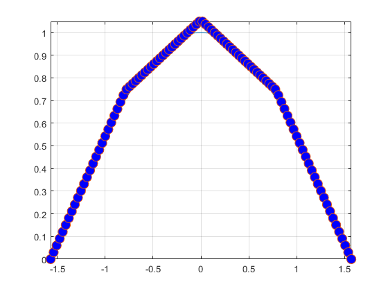

ex4
figure(1);
f=@(x)sin(x);
n=2;
X=linspace(-pi/2,pi/2,n+1);
Y=f(X);
fplot(f,[-pi/2,pi/2]);
hold on;
grid on;
plot(X,Y,'o','MarkerFaceColor','r','Markersize',10);
syms x;
df=diff(f(x),x);
df=matlabFunction(df,'vars',{x});
dfa=df(-pi/2);
xgr=linspace(-pi/2,pi/2,100);
for i=1:length(xgr)
[S(i),ds(i)]=SplineP(X,Y,xgr(i),dfa);
end
plot(xgr,S,'o','MarkerFaceColor','b','Markersize',10);
figure(2)
fplot(df,[-pi/2,pi/2]);
hold on;
grid on;
plot(xgr,ds,'o','MarkerFaceColor','b','Markersize',10);
figure(3);
f=@(x)sin(x);
n=4;
X=linspace(-pi/2,pi/2,n+1);
Y=f(X);
fplot(f,[-pi/2,pi/2]);
hold on;
grid on;
plot(X,Y,'o','MarkerFaceColor','r','Markersize',10);
syms x;
df=diff(f(x),x);
df=matlabFunction(df,'vars',{x});
dfa=df(-pi/2);
xgr=linspace(-pi/2,pi/2,100);
for i=1:length(xgr)
[S(i),ds(i)]=SplineP(X,Y,xgr(i),dfa);
end
plot(xgr,S,'o','MarkerFaceColor','b','Markersize',10);
figure(4)
fplot(df,[-pi/2,pi/2]);
hold on;
grid on;
plot(xgr,ds,'o','MarkerFaceColor','b','Markersize',10);

figure(5);
f=@(x)sin(x);
n=10;
X=linspace(-pi/2,pi/2,n+1);
Y=f(X);
fplot(f,[-pi/2,pi/2]);
hold on;
grid on;
plot(X,Y,'o','MarkerFaceColor','r','Markersize',10);
syms x;
df=diff(f(x),x);
df=matlabFunction(df,'vars',{x});
dfa=df(-pi/2);
xgr=linspace(-pi/2,pi/2,100);
for i=1:length(xgr)
[S(i),ds(i)]=SplineP(X,Y,xgr(i),dfa);
end
plot(xgr,S,'o','MarkerFaceColor','b','Markersize',10);
figure(6)
fplot(df,[-pi/2,pi/2]);
hold on;
grid on;
plot(xgr,ds,'o','MarkerFaceColor','b','Markersize',10);

f=@(x)sin(x);
n=10;
X=linspace(-pi/2,pi/2,n+1);
Y=f(X);
xgr=linspace(-pi/2,pi/2,100);
[y,ypr]=SplinePv(X,Y,xgr,dfa)
y =
Columns 1 through 7
-1.0000 -0.9995 -0.9980 -0.9955 -0.9920 -0.9875 -0.9820
Columns 8 through 14
-0.9755 -0.9680 -0.9596 -0.9501 -0.9396 -0.9283 -0.9161
Columns 15 through 21
-0.9029 -0.8889 -0.8740 -0.8581 -0.8414 -0.8238 -0.8052
Columns 22 through 28
-0.7859 -0.7659 -0.7452 -0.7237 -0.7016 -0.6787 -0.6551
Columns 29 through 35
-0.6308 -0.6057 -0.5800 -0.5537 -0.5270 -0.4999 -0.4722
Columns 36 through 42
-0.4441 -0.4156 -0.3866 -0.3571 -0.3272 -0.2968 -0.2663
Columns 43 through 49
-0.2355 -0.2046 -0.1736 -0.1424 -0.1110 -0.0795 -0.0478
Columns 50 through 56
-0.0160 0.0160 0.0478 0.0795 0.1110 0.1424 0.1736
Columns 57 through 63
0.2046 0.2355 0.2663 0.2968 0.3272 0.3571 0.3866
Columns 64 through 70
0.4156 0.4441 0.4722 0.4999 0.5270 0.5537 0.5800
Columns 71 through 77
0.6057 0.6308 0.6551 0.6787 0.7016 0.7237 0.7452
Columns 78 through 84
0.7659 0.7859 0.8052 0.8238 0.8414 0.8581 0.8740
Columns 85 through 91
0.8889 0.9029 0.9161 0.9283 0.9396 0.9501 0.9596
Columns 92 through 98
0.9680 0.9755 0.9820 0.9875 0.9920 0.9955 0.9980
Columns 99 through 100
0.9995 1.0000
ypr =
Columns 1 through 7
0.0000 0.0315 0.0629 0.0944 0.1259 0.1574 0.1888
Columns 8 through 14
0.2203 0.2518 0.2833 0.3144 0.3428 0.3712 0.3996
Columns 15 through 21
0.4280 0.4564 0.4848 0.5132 0.5416 0.5700 0.5972
Columns 22 through 28
0.6197 0.6422 0.6648 0.6873 0.7098 0.7324 0.7549
Columns 29 through 35
0.7774 0.8000 0.8201 0.8345 0.8490 0.8635 0.8779
Columns 36 through 42
0.8924 0.9069 0.9213 0.9358 0.9503 0.9610 0.9659
Columns 43 through 49
0.9709 0.9759 0.9809 0.9859 0.9909 0.9958 1.0008
Columns 50 through 56
1.0058 1.0058 1.0008 0.9958 0.9909 0.9859 0.9809
Columns 57 through 63
0.9759 0.9709 0.9659 0.9610 0.9503 0.9358 0.9213
Columns 64 through 70
0.9069 0.8924 0.8779 0.8635 0.8490 0.8345 0.8201
Columns 71 through 77
0.8000 0.7774 0.7549 0.7324 0.7098 0.6873 0.6648
Columns 78 through 84
0.6422 0.6197 0.5972 0.5700 0.5416 0.5132 0.4848
Columns 85 through 91
0.4564 0.4280 0.3996 0.3712 0.3428 0.3144 0.2833
Columns 92 through 98
0.2518 0.2203 0.1888 0.1574 0.1259 0.0944 0.0629
Columns 99 through 100
0.0315 0.0000